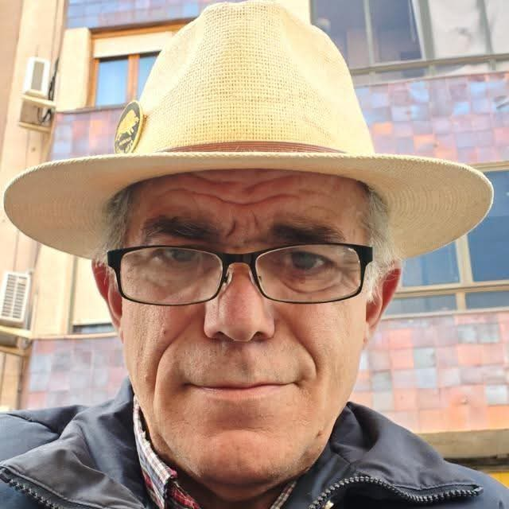

PEÑA JABALÍ HUNTERS
La Peña
Quiénes somos, nuestra identidad y nuestra historia.
NUESTRA IDENTIDAD
Una Peña con historia y futuro
Peña Jabalí Hunters recoge una tradición cinegética vinculada a Almansa y a su entorno rural y forestal.
La actual Peña mantiene el espíritu de un grupo unido por la actividad cinegética, el conocimiento del territorio y la convivencia entre sus miembros, proyectándolo hacia una nueva etapa.
Nuestra identidad se construye sobre una idea sencilla: la caza entendida como actividad, territorio, responsabilidad y convivencia.

NUESTRA FORMA DE ENTENDER LA CAZA
Tradición, actividad y convivencia
La caza forma parte de la historia de la Peña, pero también lo hace la relación entre las personas que la practican y el territorio en el que se desarrolla.
La documentación histórica muestra una Peña que, además de organizar batidas y esperas, desarrolló actividades de convivencia, viajes de interés cinegético y distintas iniciativas relacionadas con los espacios forestales.
Hoy queremos mantener esa dimensión: actividad cinegética, respeto por el entorno y compañerismo.
NUESTRA HISTORIA
Una historia que comenzó en el monte almanseño
La historia de la Peña Jabalí está estrechamente ligada a la evolución de la caza mayor en Almansa durante la segunda mitad del siglo XX.
La documentación conservada permite reconstruir su origen, su organización y buena parte de su actividad a partir de actas, estatutos, diarios personales y otros documentos conservados por la familia de Antonino Maciá.
Los orígenes
La proliferación del jabalí en Almansa contribuyó a un contexto de intensa actividad cinegética y el grupo comenzó a consolidarse.
Primera etapa organizada
La Peña se organizó oficialmente con junta directiva y estatutos, desarrollando batidas, esperas y actividades de convivencia.
Una batida histórica
En abril de 1976 se celebró una batida multitudinaria en el Quemado de Garrido con 160 puestos.
Constitución como sociedad deportiva
El 12 de septiembre de 1980 se formalizó el acta fundacional para constituir la sociedad deportiva.
Formalización
En septiembre de 1981 se realizó la presentación notarial y durante 1982 se formalizó la organización y sus primeros estatutos.
Madurez e iniciativas
La actividad incluyó jornadas de convivencia, viajes, iniciativas relacionadas con la conservación y vigilancia forestal.
El legado
Las actividades fueron cambiando, pero la esencia de la Peña permaneció viva durante los años 90 y posteriormente.
ANTONINO MACIÁ
Una figura fundamental en nuestra historia
Antonino Maciá Vicente (1930–2020) fue una de las figuras vinculadas al origen y desarrollo de la Peña Jabalí.
Aficionado a la caza deportiva y conocedor del ámbito rural y forestal, participó en la dinamización de la Peña y en su evolución como sociedad deportiva. La documentación conservada y sus diarios personales constituyen además una fuente fundamental para reconstruir esta historia.
Su figura forma parte de la memoria que queremos conservar y transmitir.

EL LEGADO
Una historia que forma parte de nuestra identidad
La antigua Peña Jabalí desarrolló durante décadas una intensa actividad cinegética y social en Almansa.
Su historia reúne nombres, lugares, jornadas, documentos y experiencias que forman parte de la memoria de varias generaciones de cazadores.
Peña Jabalí Hunters recupera esa memoria desde el presente, diferenciando el legado histórico de la actividad actual y conservando el patrimonio documental y fotográfico que permite conocerlo.
La actividad continúa.
DOCUMENTACIÓN HISTÓRICA
Memoria, archivo y documentación
Una parte esencial de este proyecto es la recuperación y conservación de la documentación histórica de la Peña.
«Sociedad pionera de la caza mayor en Almansa»
GALERÍA
La memoria también se conserva en imágenes
Fotografías, jornadas y documentos permiten acercarnos a la historia de la Peña desde otra perspectiva.
La Galería reúne este patrimonio visual y lo organiza separando el material histórico de la actividad actual.

PEÑA JABALÍ HUNTERS
Una nueva etapa sobre una historia que merece ser conservada.
Caza, territorio y convivencia.
Contactar